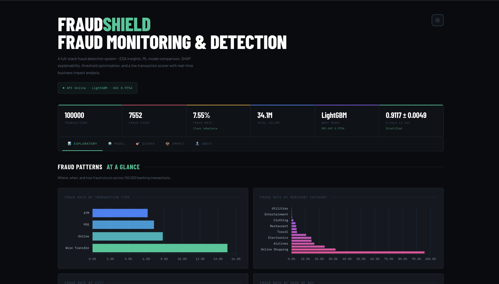
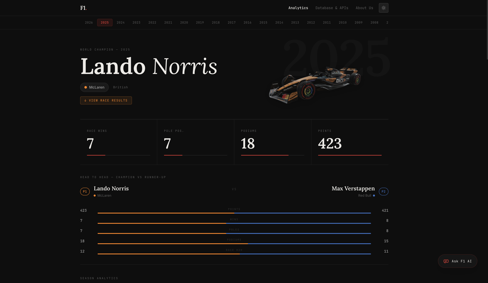
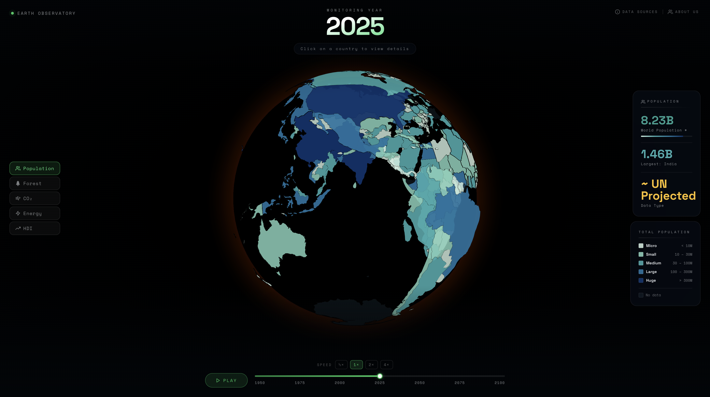
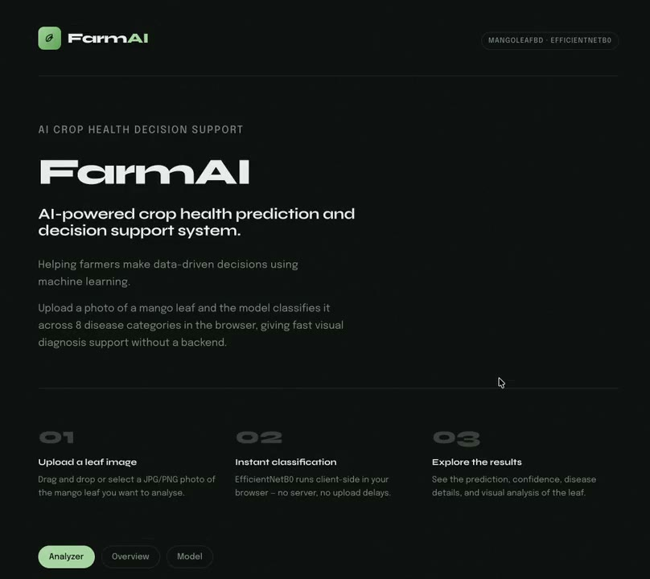
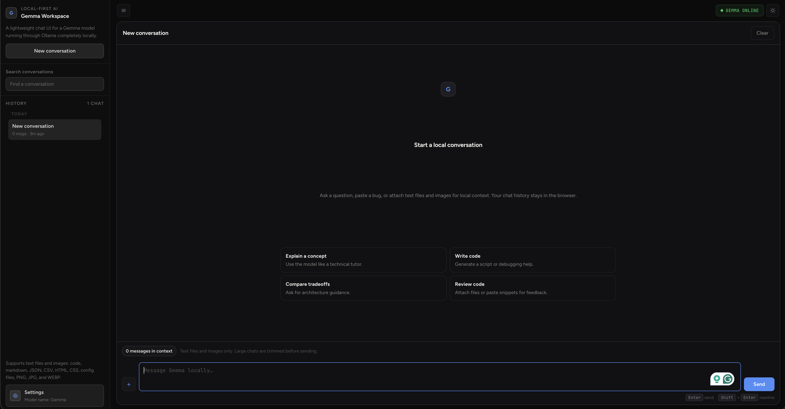

Portfolio
From multi-agent RL to NASA citizen science - things I've built and researched.
Featured

LiveExplainable fraud monitoring dashboard with live transaction scoring, model benchmarking, and analyst-ready decision support.

LiveBrowser-based Formula 1 analytics dashboard covering 27 seasons, with live current-season data, race drill-downs, and a grounded F1 chat assistant.

LiveInteractive 3D globe visualising world development indicators sourced from Our World in Data.

LiveCNN classifier built for remote farming communities to diagnose crop disease from a leaf photo.

DemoLocal-first chat interface for Gemma running through Ollama, with persistent browser memory, multimodal attachments, and polished chat workflows.
More projects
Portfolio allocation system using Multi-Agent Reinforcement Learning. Leading development of individual agent models and a meta-model that coordinates across agents to optimise decisions. Designing financial data pipelines covering stocks, crypto, and ETFs from 2010 to present. Integrated with Alpaca for live paper trading simulation.
Contributed to a NASA-supported citizen science initiative analysing solar eclipse imagery at scale. Developed a specialised image alignment tool using OpenCV for large-scale astronomical image processing. Collaborated across a multidisciplinary team on data preparation and scientific workflows.
Open-source Python GUI for the Chip Test Board at Paul Scherrer Institute (PSI). Enables researchers to configure and control X-ray and photon detector hardware with live signal visualisation. Presented as a poster at NoBugs Conference 2022, Switzerland.
Collected and processed 1.6M+ unstructured healthcare reviews - cleaning, tokenisation, lemmatisation, and TF-IDF vectorisation. Built scalable GCP workflows for data ingestion and model training. Deployed a real-time NLP pipeline and Streamlit UI with live sentiment tracking.
Web app that condenses long articles using five models - LSTM (RNN), Logistic Regression, Linear Regression, and two Decision Tree variants - trained on the CNN/DailyMail dataset. Users choose the model and summary length.
Intelligent recommendation engine combining KNN, Content-Based Filtering, and User-Based Collaborative Filtering across a dataset of 500K+ entries. Fuses all three models to generate 5 curated, bias-reduced recommendations per user based on real-time input.
Full-stack Android medical companion app providing instant access to health information and emergency resources. Features medical condition search, location-based hospital and ambulance finder, and a community-driven blood bank where users can find or donate blood by type.